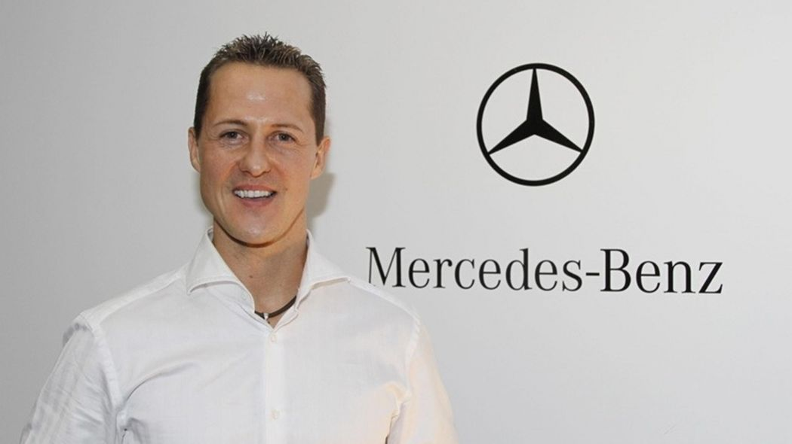
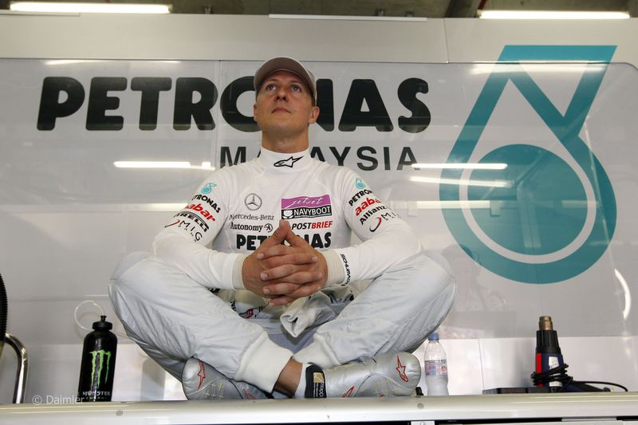

Le 23 décembre 2009, Mercedes Grand Prix recrute Schumacher aux côtés de Nico Rosberg. Il retrouve Ross Brawn avec qui il a gagné ses sept couronnes mondiales. Les premières courses sont assez difficiles pour l'Allemand car les nombreux changements de réglementation depuis qu'il a pris sa première retraite ne jouent pas en sa faveur. Il avoue d'ailleurs être un peu « rouillé » en séance de qualification.
Il inscrit néanmoins ses premiers points dès la première épreuve, à Bahreïn où il se classe sixième puis termine dixième en Australie et en Chine. Après les quatre premières courses, il a abandonné une fois et pointe à la dixième place du championnat avec dix points quand son coéquipier est second du championnat avec cinquante points et deux podiums. Lors du retour du championnat en Europe, son écurie aligne une nouvelle version de la monoplace à empattement long qui convient mieux à son style de pilotage. Schumacher se classe alors quatrième des Grands Prix d'Espagne et de Turquie mais lors des sept courses suivantes, il ne parvient pas à se classer mieux que septième, finissant même à plusieurs reprises hors des points. Il enchaîne ensuite trois places d'honneur en se classant sixième au Grand Prix du Japon, quatrième du Grand Prix de Corée du Sud et septième au Grand Prix du Brésil. Lors du dernier Grand Prix de la saison, à Abou Dabi, Schumacher abandonne après un violent contact avec Vitantonio Liuzzi qui aurait pu tourner à la catastrophe : parti en tête-à-queue et bloqué en piste, Schumacher est percuté par la Force India dont le museau passe à ras de son casque. Schumacher termine le championnat à la neuvième place avec 72 points alors que son coéquipier a inscrit 70 points de plus que lui. C'est son pire classement depuis 1999 où, à cause d'une fracture de la jambe, il n'avait participé qu'à dix courses sur seize.
En 2011, si Schumacher est encore en début de saison dominé par son coéquipier, l'écart de performance entre les deux pilotes se réduit. Schumacher abandonne lors du grand prix inaugural en Australie à cause d'un problème de suspension mais termine neuvième en Malaisie et devançant pour la première fois Nico Rosberg au championnat, qui reprend l'avantage en Chine où Schumacher se classe huitième.
Schumacher termine sixième en Espagne puis, lors du tumultueux Grand Prix du Canada disputé sous la pluie, se hisse en course à la deuxième place, est troisième à quatre tours de la fin et termine finalement quatrième de l'épreuve10, son meilleur résultat depuis le début de la saison. Neuvième en Grande-Bretagne puis huitième de son Grand Prix national, il fête ses vingt ans de Formule 1 au Grand Prix de Belgique où il part dernier après un accident en qualification mais termine cinquième, devançant son coéquipier. Il réédite cette performance lors du Grand Prix suivant, en Italie. La fin de saison est plus contrastée puisqu'il termine trois fois dans les points (sixième au Japon, cinquième en Inde puis septième à Abou Dabi) et abandonne deux fois sur accrochage à Singapour et en Corée. S'il termine huitième du championnat du monde avec 76 points, il a considérablement rattrapé son retard sur son coéquipier qui le précède seulement d'une place au championnat du monde et à qui il ne concède plus que treize points contre soixante-dix l'année précédente. Satisfait de ses résultats, il décide d'honorer sa troisième année de contrat avec Mercedes pour la saison suivante.
En 2012, Schumacher a toujours Rosberg comme coéquipier et réussit à hausser de plus en plus son niveau pour le devancer de plus en plus souvent, notamment en qualifications. Lors du Grand Prix inaugural, en Australie, il se qualifie quatrième quand Rosberg est septième. Il occupe la troisième place en course avant d'abandonner au bout de dix tours, sur un souci de boîte de vitesses. En Malaisie, il se qualifie troisième mais s'accroche avec Romain Grosjean dès le départ et termine dixième. En Chine, la première ligne est monopolisée par les Mercedes et Schumacher réalise ainsi sa meilleure qualification depuis presque six ans. Le lendemain, il occupe une solide deuxième place avant d'abandonner après son arrêt au stand au douzième tour, l'écrou de sa roue avant-droite n'étant pas encore serré au moment où il est reparti.
À Bahreïn, il se qualifie dix-huitième mais doit changer sa boîte de vitesses : il part vingt-deuxième et termine dixième à plus d'une minute du vainqueur. Au Grand Prix d'Espagne, il accède une nouvelle fois à la troisième phase de qualification mais abandonne en course après un accrochage avec Bruno Senna qui lui vaut une sanction de cinq places de pénalité sur la grille du Grand Prix de Monaco. Ainsi, bien qu'il réalise le meilleur temps de la séance qualificative, il n'obtient pas la pole position, dévolue à Mark Webber, second des qualifications, et s'élance de la sixième place sur la grille11,12,13,14. Après un nouvel abandon au Canada après une casse d'aileron, Schumacher retrouve le podium pour la première fois depuis son retour à la compétition en terminant troisième sur le circuit urbain de Valence. Il termine à deux reprises dans les points en Grande-Bretagne puis en Allemagne, où il se classe à deux reprises septième. Après un abandon sur panne mécanique en Hongrie, il termine une nouvelle fois septième en Belgique puis sixième à Monza, pour le Grand Prix d'Italie. Au Grand Prix de Singapour, il commet une erreur de pilotage et percute violemment Jean-Éric Vergne, contraignant les deux pilotes à l'abandon. La semaine suivante, le 28 septembre 2012, l'écurie Mercedes Grand Prix dirigée par Ross Brawn et Nick Fry, annonce que Lewis Hamilton vient de signer avec elle un contrat de trois ans et remplacera donc Schumacher à partir de la saison 201315. Le 4 octobre 2012, à l'occasion du Grand Prix du Japon, il confirme officiellement qu'il prend sa retraite de pilote de Formule 1 dès la fin de la saison16,17. L'Allemand alors âgé de 43 ans, déclare ne plus se sentir aussi fort qu'en sa jeunesse et préfère donc quitter le monde de la F1 après 19 années de compétition18. La « tournée asiatique » ne se déroule pas au mieux pour Schumacher qui, après l'abandon de Singapour, termine hors des points à Suzuka (onzième), à Yeongam (treizième) et en Inde (vingt-deuxième). S'il ne termine que seizième du Grand Prix des États-Unis, il termine sa carrière en Formule 1 en se classant dans les points, septième, du Grand Prix du Brésil. Schumacher se classe treizième du championnat du monde des pilotes avec quarante-neuf points contre quatre-vingt-treize pour son coéquipier Rosberg (neuvième) qui a réussi à obtenir la première victoire de sa carrière. Il a inscrit des points à huit occasions, est monté sur un podium et a réalisé le meilleur tour en course pour son Grand Prix national.